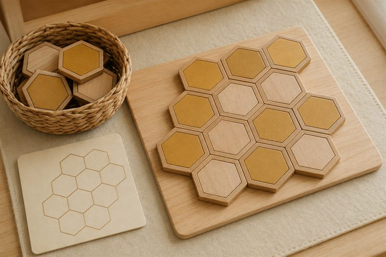
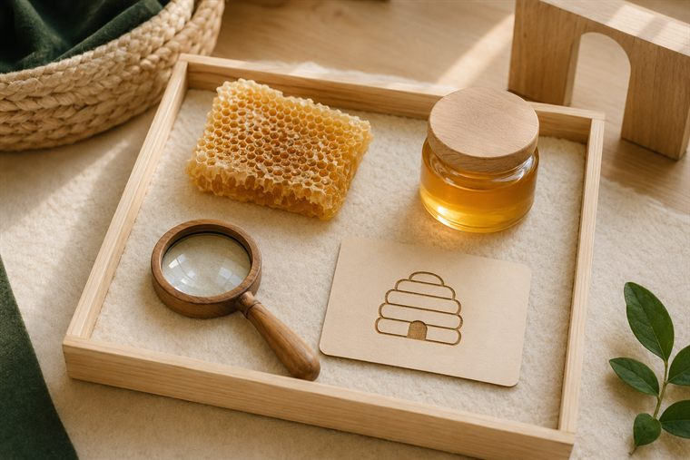
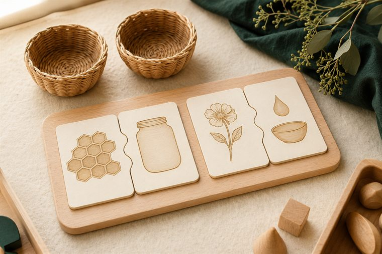
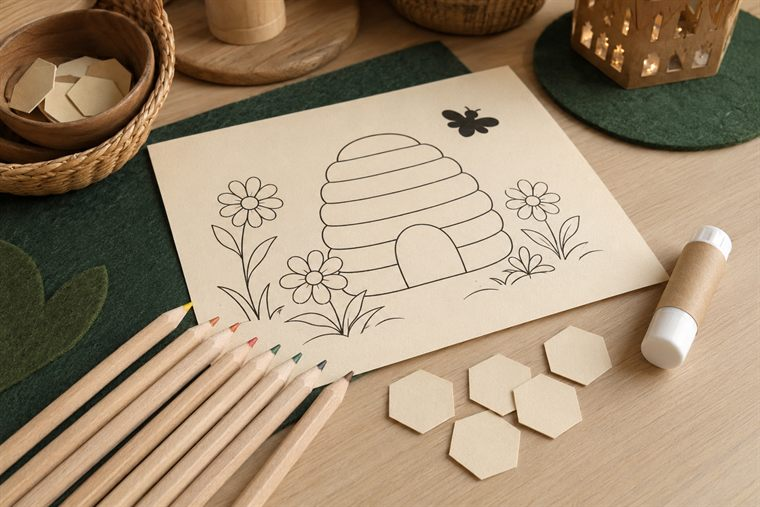

مساحاتُ لعبٍ حرّ بأدواتٍ تعليمية. لكثرة الأعداد نفتح ٤ أركانٍ متوازية بمراكز مختلفة؛ وزّعي المجموعات عليها وتتناوب بينها في الفترتين حتى لا تتكدّس. كل ركنٍ لمسةٌ تطبيقية خفيفة على فكرة اليوم. (أعمار ٥–٦: بناء/تلوين جاهز/قصّ ولصق/ترتيب/اختيار بطاقات/أدوار/حركة — بلا كتابة أو رسمٍ حرّ.)
دروس اليوم المتكاملة: كتابي المنير (سورة النبأ · التسميع لمن حفظ) · علّمني ربي (التفكّر في النحلة) · حرف اللام.

🧱 ساحة البناء · «أبني خليّةَ النحل»
يبني الطفل بالبلاطِ المغناطيسيّ السداسيّ خلايا متجاورةً كخليّةِ النحل، ويتذكّرُ أنّ اللهَ هدى النحلةَ لأدقِّ بناء. (لا تلوين هنا — التلوينُ في ركن فنوني.)
🧰 الأدوات: بلاطٌ مغناطيسيّ سداسيّ · مكعباتٌ خشبية · قاعدةُ بناء · بطاقةُ خليّةٍ نموذجية.
📋 دور المعلمة: تُتيح البناءَ الحرّ ثم تربطُ دقّةَ الشكل السداسيّ بهداية الله: «مَن علّم النحلةَ هذا البناء؟»؛ تحتفي بالتعاون.
🌱 المعنى المركزي: هدى اللهُ النحلةَ لأدقِّ بناء؛ سبحانه.
📜 قوانين الركن: أبقى في ركني حتى ينتهي الوقت · أحافظ على أدواته · أتشارك وأنتظر دوري · أُعيد الأدوات مرتّبة.

🔎 أكتشف ما حولي · «سبحان مَن هداها»
يفحصُ الطفل بالمكبّر قطعةَ شمعِ عسلٍ آمنة وصورَ خليّةٍ، ويلاحظُ نظامَ العيونِ السداسية، ويقول: «سبحان مَن هداها». (ملاحظةٌ حسّية بلا كتابة.)
🧰 الأدوات: قطعةُ شمعِ عسلٍ آمنة · صورُ خليّةٍ مطبوعة · مكبّراتٌ وعدساتٌ يدوية.
📋 دور المعلمة: توجّه ملاحظةَ النظام والتكرار وتنسبه إلى هداية الله؛ تقودُ التسبيحَ وتحتفي بالدهشة.
🌱 المعنى المركزي: نظامُ الخليّة آيةُ هدايةِ الله؛ سبحانه.
📜 قوانين الركن: أبقى في ركني حتى ينتهي الوقت · أحافظ على أدواته · أتشارك وأنتظر دوري · أُعيد الأدوات مرتّبة.

🧩 أدرك وأستمتع · «النحلةُ ومنافعها»
يطابقُ الطفل النحلةَ بمنتجها (عسلٌ · شمع)، ويرتّبُ مراحلَ (زهرة → نحلة → عسل) بصورٍ ودُمًى بلا ملامح، لعبًا بلا كتابة.
🧰 الأدوات: بطاقاتُ مطابقةٍ وتسلسل (زهرة↔نحلة↔عسل) · لوحةُ ترتيبٍ مصوّرة · سِلالُ تصنيف.
📋 دور المعلمة: تنمذجُ مطابقةً مرّةً ثم تترك الطفلَ يستكشف؛ تحاورُه: «مَن جعل في العسل شفاءً؟»؛ تحتفي بالمحاولة.
🌱 المعنى المركزي: في العسل شفاءٌ ونعمة؛ فأشكرُ الله.
📜 قوانين الركن: أبقى في ركني حتى ينتهي الوقت · أحافظ على أدواته · أتشارك وأنتظر دوري · أُعيد الأدوات مرتّبة.

🎨 فنوني الجميلة · «ألوّنُ الخليّةَ والزهرة»
يلوّنُ الطفل مشهدَ خليّةٍ وزهورٍ جاهزًا (نحلةٌ رمزية بلا ملامح)، ثم يقصّ ويلصق قرصَ عسلٍ، ويردّدُ «جمالُ صنعِ الله».
🧰 الأدوات: مشهدُ خليّةٍ وزهورٍ جاهز للتلوين (بلا وجوهٍ للأرواح) · أقلامُ تلوين · قصاصاتُ عسلٍ وزهر · لاصق.
📋 دور المعلمة: تُسمّي الخليّةَ والزهرةَ وتنسبها إلى الله؛ تعين على القصّ واللصق؛ تُثني على المشاركة لا الإتقان الفنّي.
🌱 المعنى المركزي: جمالُ صنعِ الله في النحلة والزهرة؛ فأفرحُ وأحمد.
📜 قوانين الركن: أبقى في ركني حتى ينتهي الوقت · أحافظ على أدواته · أتشارك وأنتظر دوري · أُعيد الأدوات مرتّبة.
تفاصيلُ الأركان الستّة وروتينُها في تبويب «خريطة الأركان» أعلى الصفحة، ولكلِّ لقاءٍ ركنان تطبيقيّان داخل دليله.